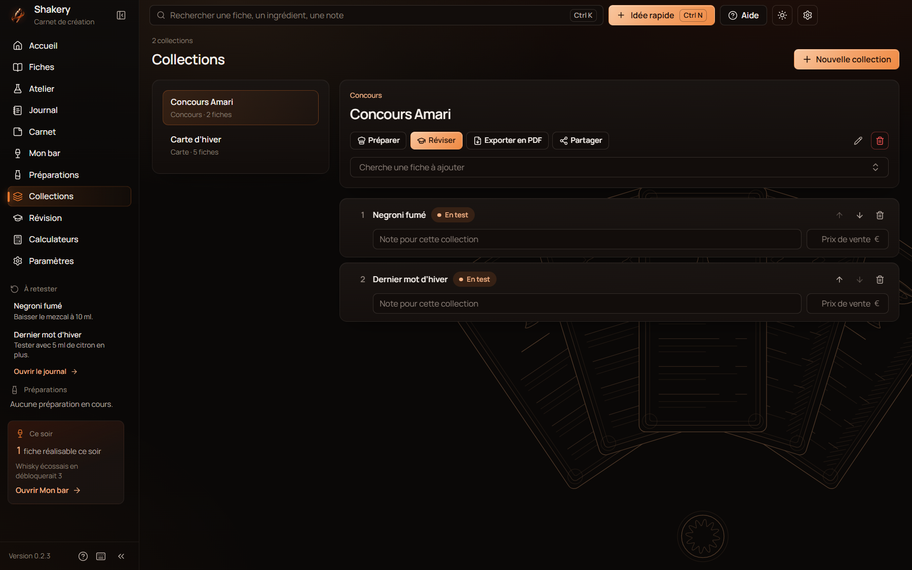

Shakery · refonte ergonomique · planche 07 sur 1024 novembre 2026
Collections en liste à lignes
Avant

Ce qui change
- La colonne de sélection et le panneau de détail laissent la place à une liste à lignes séparées par des filets, pour voir toutes les collections d’un coup d’œil sans carte par élément.
- Chaque ligne montre le nom, une description courte, le type, le nombre de fiches en cuivre et en chiffres tabulaires, puis la date de modification, alignés en colonnes sous des intitulés en petites capitales.
- Réviser et Exporter en PDF deviennent des boutons fantômes sur chaque ligne, et Partager, Modifier et Supprimer passent dans un menu « Autres actions », pour que les actions répétées restent discrètes.
- Nouvelle collection reste le seul bouton plein cuivre de l’écran.
- Une colonne calme à droite, sans bord, montre les dernières révisions avec la collection, le mode, la date et le score, puisque l’onglet Révision a quitté la barre latérale.
- L’ajout de fiches et la note ou le prix de vente par fiche passent sur la page de la collection ouverte, ce qui allège la liste.
- Le dessin de fond est atténué à la même opacité que sur les autres planches, car aucune carte ne le masque plus derrière le texte.
À trancher
- Un clic sur le nom ouvre la collection sur son onglet Fiches. Préfères-tu garder la liste et le détail côte à côte comme aujourd’hui ?
- La colonne « Dernières révisions » te sert-elle sur cette page, ou veux-tu garder l’historique seulement dans chaque collection ?
- Faut-il ajouter une colonne de prix ou de coût moyen pour les collections de type Carte ?